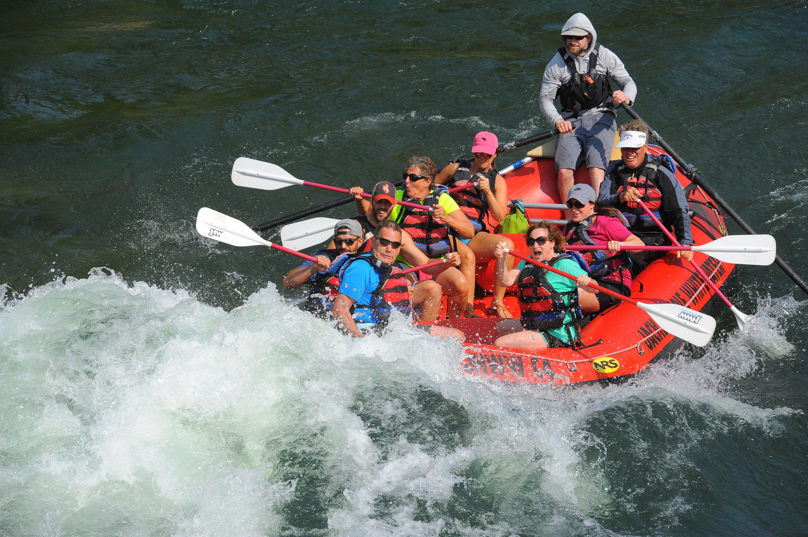
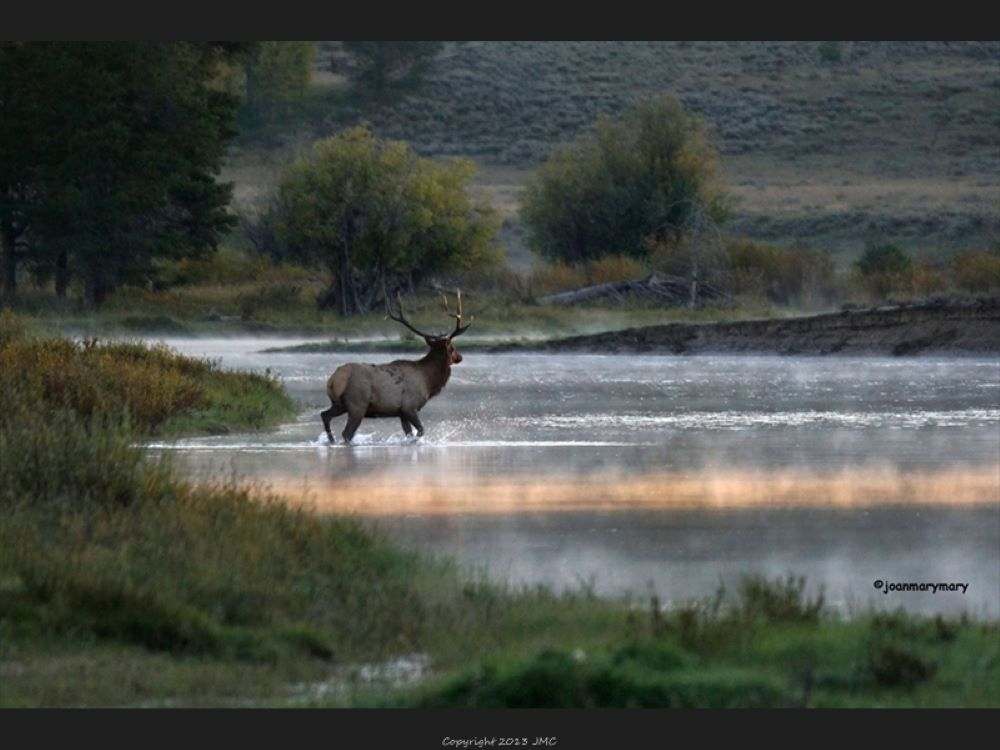

River Rafting
Camping


Nature
Drone Photography
We provide photographic and videographic drone services that can leave you and your family with stunning images and videos for long lasting memories! We only use the highest quality of drones to provide smooth video quality, maximum video/photography time, and
Find out more information by hitting the link below!
Contact Us